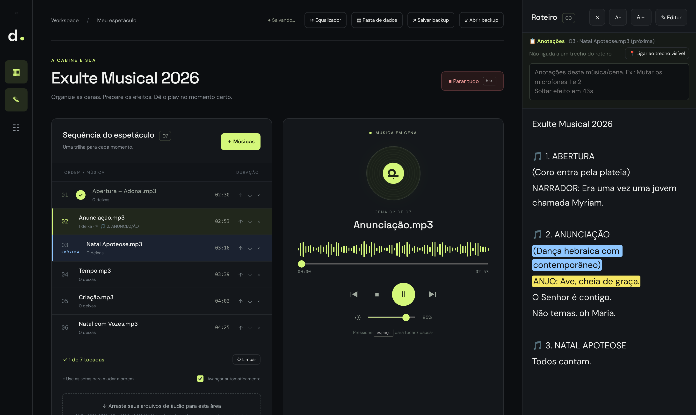
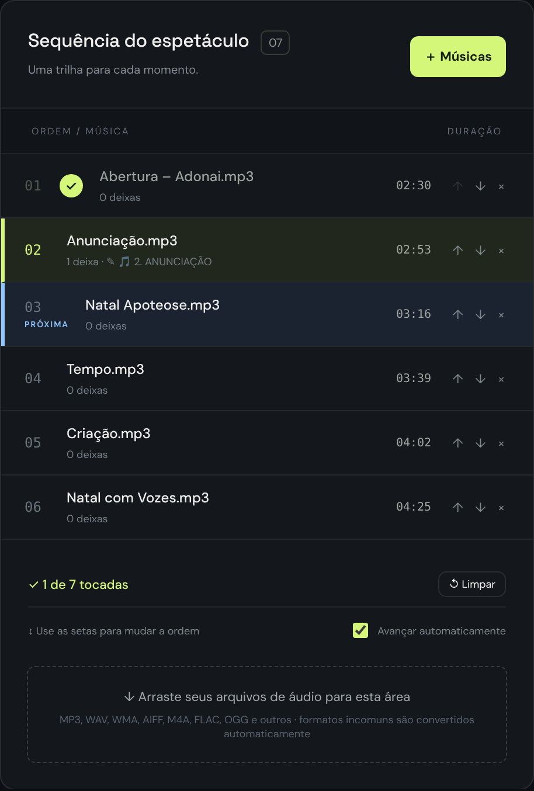
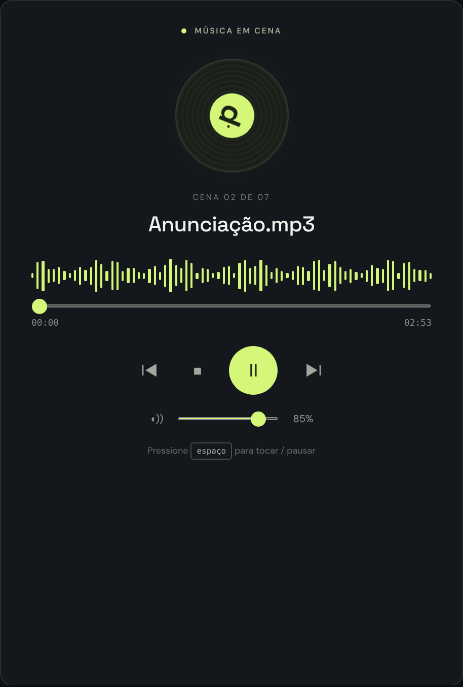
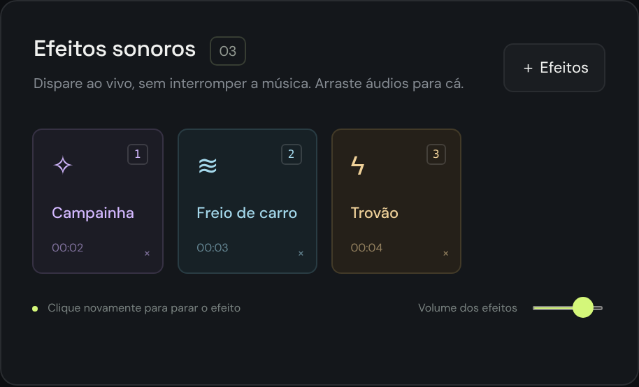
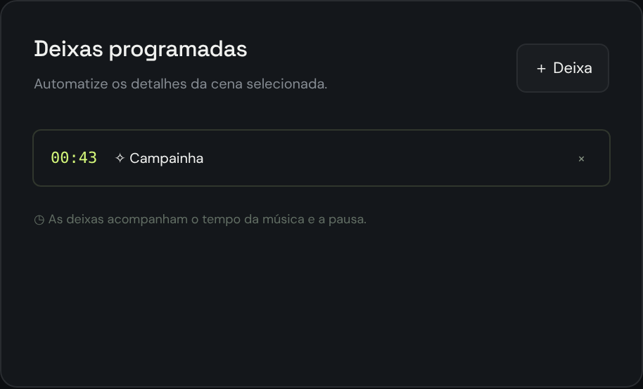
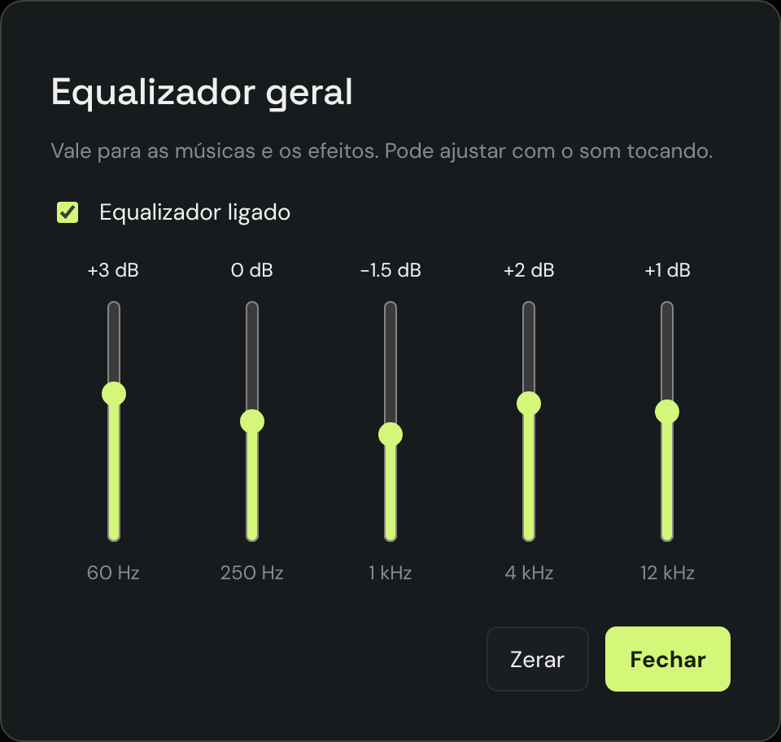
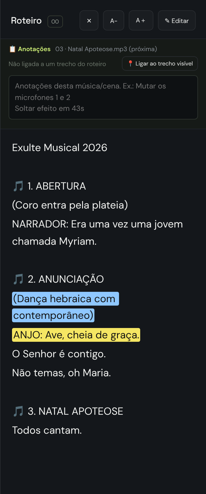
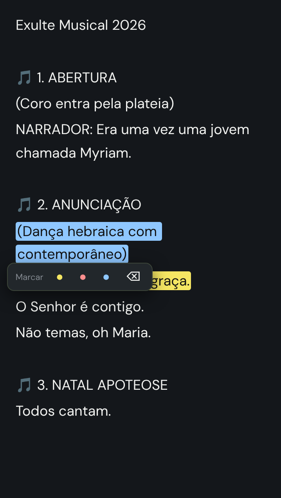
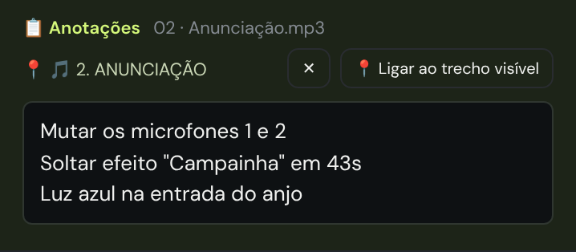
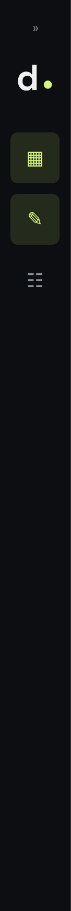

deixa. — tutorial
Mesa de áudio para espetáculos · versão 2.2 · Windows

A tela completa: menu (esquerda, encolhido), sequência de músicas, player, e o roteiro com as anotações (direita).
0Instalando
- Extraia o Deixa-2.2.zip numa pasta (ex.: Documentos\Deixa) e abra o Exulte.exe.
- Tudo o que você fizer é salvo sozinho na pasta Deixa-dados, criada ao lado do programa. Não precisa clicar em salvar.
- Para atualizar o app, troque só o Exulte.exe e mantenha a pasta Deixa-dados. Assim nada se perde.
1Músicas: montando a sequência

- ＋ Músicas ou arraste os arquivos do computador para qualquer lugar da janela.
- ↑ ↓ mudam a ordem e × exclui a música. Clicar no nome seleciona a música; duplo clique renomeia.
- A lista tem rolagem própria: mesmo com 30 músicas, o resto da tela fica no lugar.
- Os formatos comuns entram direto (MP3, WAV, M4A, FLAC, OGG). Os incomuns (WMA, AIFF, áudio de vídeo) são convertidos sozinhos.
2Tocando o espetáculo

| Espaço ou ▶ | Toca / pausa a música selecionada |
| ■ | Para e volta ao início |
| Ⅰ◀ ▶Ⅰ | Música anterior / próxima |
| Esc / Parar tudo | Para a música e todos os efeitos na hora (emergência) |
| Avançar automaticamente | Ao terminar uma música, a próxima começa sozinha |
- ✓ Check: a música que toca até o fim ganha um ✓ verde, para você saber o que já passou. Clicar no ✓ desmarca. ↺ Limpar desmarca todas antes de uma nova apresentação.
- PRÓXIMA: com uma música tocando, clicar em outra não corta o som. Ela fica marcada em azul como PRÓXIMA, e você já vê as anotações e o roteiro dela. Ela entra quando você aperta ▶Ⅰ ou quando a atual termina. Para desistir, clique nela de novo.
Clicar na música que já está tocando não faz nada. Isso é de propósito, para ninguém reiniciar a música sem querer no meio da cena.
3Efeitos sonoros

- ＋ Efeitos ou arraste os arquivos em cima do painel “Efeitos sonoros”. Ele fica destacado quando o arquivo pode ser solto. Se soltar fora do painel, o arquivo entra como música.
- Para disparar, clique no pad ou use as teclas 1 a 9. Clique de novo para parar o efeito.
- Os efeitos tocam por cima da música, sem interromper. O volume dos efeitos é separado do volume da música.
- Duplo clique no nome renomeia o efeito; o × no canto exclui.
4Deixas programadas (automáticas)

- Selecione a música e clique em ＋ Deixa. Escolha tocar um efeito ou pausar a música num tempo exato (mm:ss).
- Durante a música, a deixa dispara sozinha no tempo certo. Se você arrastar a música para trás, as deixas voltam a valer.
5Equalizador

- Botão ≋ Equalizador no topo. São 5 faixas, do grave (60 Hz) ao agudo (12 kHz), de −12 a +12 dB.
- Vale para tudo: músicas e efeitos. Pode ajustar com o som tocando, sem cortes.
- Duplo clique numa faixa zera só ela; Zerar zera todas. A caixa Equalizador ligado liga e desliga o equalizador, para comparar o som.
6Roteiro

- No menu esquerdo, ✎ Roteiro abre o roteiro como uma coluna fixa à direita, na mesma tela da mesa. O ✕ fecha.
- ✎ Editar para escrever ou colar o roteiro (do Word, PDF, WhatsApp…). Ao terminar, ✓ Concluir.
- A− / A+ mudam o tamanho da letra. A rolagem é na mão.
- Cenas (opcional): linhas curtas como “Cena 1 – Anunciação”, “1ª CENA: Trindade”, “CENA III” ou “ATO 2” viram botões na lista do topo; clique para pular até a cena. A lista atualiza ao clicar em ✓ Concluir. Ou escolha você: selecione qualquer parte de uma linha e clique em 🎬 Cena na barrinha para transformá-la em cena (clique de novo para desfazer).
Marca-texto

- Selecione um trecho com o mouse e aparece a barrinha Marcar. Escolha amarelo, vermelho ou azul.
- Para tirar a marca, selecione o trecho e clique em ⌫. Funciona lendo ou editando o roteiro.
- Sugestão de uso: amarelo para fala que é deixa, vermelho para cena crítica de som e azul para deixa de luz ou dança.
7Anotações de cada música

Num musical, cada música é uma cena. Em cima do roteiro fica a caixa 📋 Anotações da música selecionada, ou da PRÓXIMA, se houver uma marcada.
- Clique na caixa e escreva o que o operador precisa lembrar, uma coisa por linha. Ex.: Mutar os microfones 1 e 2 · Soltar efeito em 43s. Salva sozinho.
- Ligar a música ao roteiro: role o roteiro até o começo daquela música (ex.: “🎵 2. ANUNCIAÇÃO”) e clique em 📍 Ligar ao trecho visível.
- Depois de ligada, selecionar a música leva o roteiro direto até o trecho dela. Na lista, a música mostra o trecho ligado embaixo do nome. O ✕ desfaz a ligação.
Rotina de preparo sugerida: para cada música → selecione → role o roteiro até ela → 📍 Ligar → escreva as anotações. No dia, é só seguir a sequência.
8Tela, backup e segurança

- O « no topo do menu esquerdo encolhe a barra, que fica só com os ícones, e libera espaço. O » abre de novo.
- Salvar backup gera um .zip com o espetáculo inteiro (músicas, efeitos, roteiro, anotações). Use Abrir backup para levá-lo a outro computador.
- Pasta de dados abre a pasta onde o Deixa guarda tudo.
- Com o Deixa aberto, o computador não entra em suspensão nem apaga a tela.
Antes de cada apresentação: faça um ensaio completo. Toque cada música, dispare os efeitos, confira o equalizador e as anotações. Depois clique em ↺ Limpar para zerar os checks.
⌨Atalhos
| Espaço | Toca / pausa |
| Esc | Para todos os sons |
| 1 … 9 | Dispara os efeitos 1 a 9 |
| Duplo clique | Renomeia música/efeito · zera faixa do equalizador |
Os atalhos ficam desligados enquanto você digita no roteiro ou nas anotações.